spPaint3d resurrection
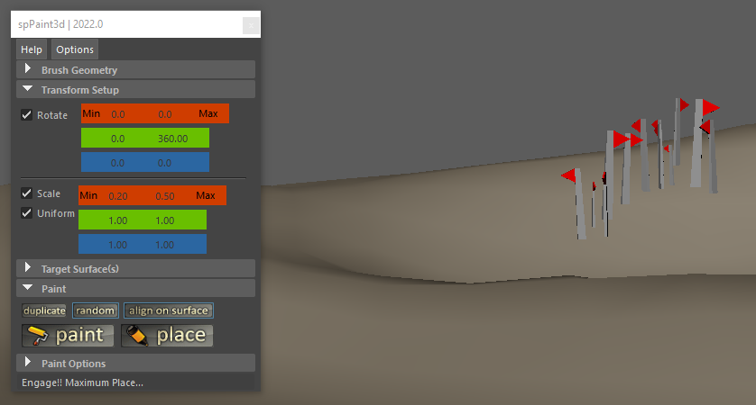
Table of Contents
Description
spPaint3d is an object placement tool, very similar to geometryPaint from Maya.
At this time, this is not a "scatter" tool as it does not contain any flood-like feature.
It is entirely raycast based, so it doesn't expect any UVs from the target surfaces in order to properly place object. However, it doesn't allow for any kind of follicle-like functionality.
See Features for more details.
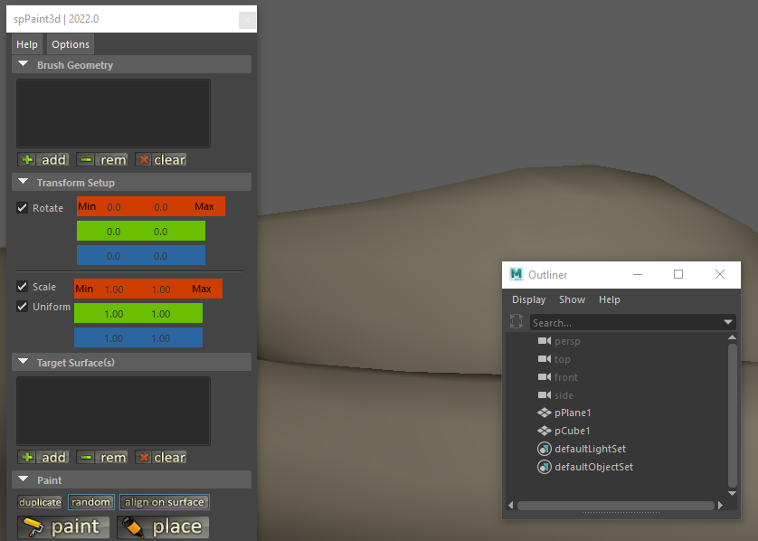
How-to Install
First and foremost, the packaged files will need to be unpacked and copied somewhere. However, this somewhere should not really matter that much. Maya offers some nice ways to run scripts from different locations without too much trouble setting it up.
This version of the script is intended to be used as a module, and a few things must be done in order for this module to be recognized and usable by Maya.
Maya has some documentation about using modules. This information is located here.
It's essentially 3 different moving parts:
- The actual scripts, plugins and/or other files. These files can be located anywhere as long as the user running Maya has read access to this location.
- The module definition file. This is a text-file with the '.mod' extension by convention. It contains the needed information to make the content of the module package usable by Maya.
- A way for Maya to be made aware of where this module file can be found. Maya looks into some default folder locations to gather any module definition files. It is however possible to add extra locations to this search as well; this is done through using an environment variable known as MAYA_MODULE_PATH. It works exactly like the PATH environment variable and contains a list of directories separated with ';'.
As with anything in Maya, there are multiple ways to deploy modules... Here are the most common scenarios:
- Insert here some custom deployment method. In this case, you most probably already know how to manipulate such module files; feel free to ignore everything in this paragraph ;)
- Copying the script files in one location but copying the module definition file elsewhere. This scenario requires updating the content of the module file to point at the location where the rest of the scripts are stored. This particular installation scenario is automated with the provided drag and drop installer script.
- Copying both the script files & the module definition file in the same location. In this case, you should in theory only need to verify this location is visible by the MAYA_MODULE_PATH environment variable. This installation scenario is rendered easier for the Windows users by using the provided install environment batch file.
Drag and Drop installation scenario
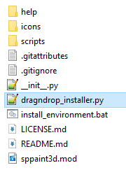
When dragging and then dropping this installation script inside the Maya viewport, it will setup the various things needed for the script to run properly. Specifically, it will automatically copy the module definition file to one of the default locations and make the appropriate modifications to it. In theory, there is nothing else to do afterwards, the script should be functional. The rest of this paragraph is unnecessary!
If however a fully manual installation is preferred, please look below for an example on how to edit the module file to change its content appropriately.
Manually editing the module file
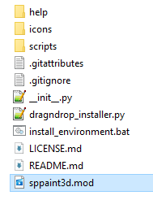
Shown below is the original version of the module file. It should work "as-is" if the folder where the module is copied is added to the Maya's module path environment variable (see below).
Note: In the scenario described here, both the module definition file and the rest of the script files and folders are located alongside in the same folder!
+ sppaint3d 2022.0 .
PYTHONPATH +:= scripts
In case the module file is moved elsewhere than where the packaged files were copied, then it must be edited as shown below as an example. The path where the actual package files are located must be added in place of the original value.
Note 1: The example below shows a windows-like path.
Note 2: This folder path can also be a relative path if that's more convenient (and possible).
Note 3: The location where this module file is located must either be one of the default location, or added to that MAYA_MODULE_PATH environment variable!
+ sppaint3d 2022.0 C:/some_folder/some_sub_folder/sppaint3d
PYTHONPATH +:= scripts
Updating the MAYA_MODULE_PATH environment variable
This installation guide will not go in depth about how to edit manually environment variable. If that's something your use-case requires, plenty of information is already available on the internet, such as Maya's own help regarding environment variables
However, this version of the script should include a batch file named 'install_environment.bat' which should append the folder where this batch file is located to the MAYA_MODULE_PATH environment variable.
It should be as simple as copying both the module definition file with this batch file together, then executing this batch file to expose this location to Maya module system.
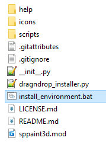
Note: This batch file only works on Windows! Also, it might require to be run as administrator (from its right-click menu)
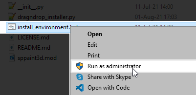
Features
- Allows painting on multiple target surfaces at once without having to reselect anything, as long as those target objects are correctly set up in the appropriate object lists.
- Paint distance threshold between 2 objects can be set through a timer or a distance.
- A precise positioning painting mode (Place mode) allow for objects to be interactively created along surfaces. While placing objects, shuffling (ctrl) and rotating (shift) are available in order to limit the amount of transformation to do afterwards.
- Script options allow preserving input connections while duplicating objects.
- Brush objects don't need to be centered at the world origin, however it helps if they have a clean transform matrix (especially the world scale pivot). Also beware if a source object is placed within a group hierarchy with its own transform and pivot affecting its final world position (a scale transform to a parent group will definitely break something somewhere). On that note, healthy transforms make for happy scripts ;)
- Support surface offset distance and random jittering along UV tangents.
- Created geometry transforms can be ramped through the transform min/max values for both rotate and scale.
History
I've written this tool mainly because I could not find a decent enough way to use the standard geometryPaint script for my particular workflow. I couldn't do what I needed to with its inherent limitations (both from the surface UVs and the grid). However, if the limited features of the original geometryPaint script was not a hindrance to you, then there's little chance you'll find this script useful.
I come from a 3DS Max background, a very long time ago... I was a heavy user of the awesome AdvancedPainter script for years, I used it a lot in my daily workflow. Then, I had to use Maya, and I became increasingly frustrated that I couldn't find a decent object placement script with a similar workflow in Maya. So it's no big surprise the script from Herman Saksono (and the one from Neil Blevins to some extent) was a major inspiration while working on this Maya version.
Hopefully this script will be useful to others than myself. Feel free to send me some email if you happen to use it and like it (or not).
Maya 2011 Note: Qt changed a lot of stuff, and without too much surprise a lot of things are currently broken (vanilla 2011 pre-service pack). A few features are sort of broken because of this, place mode is the most affected, but things should work, kind of.
Maya 2022 Note: From this release onward, Maya uses python 3 as the default (soon only) python version. There's a good chance that the subsequent versions (if any) will remain python 2 compliant only for minor updates.
Thanks to Julien Lefebvre and Gabriel Charest for helping me debug all this.
Thanks to Rick Gilliland for his help regarding Python & Maya API and for pointing me in the right direction following Maya 2011 crash extravaganza.
Finally, thanks to all those who attempted to reach out to me throughout the years, during which this script took on a life of its own... And my apologies to all those I have yet to send a reply to.
Limitations
- This script is mostly intended for artists who need to dress environments with props and other misc geometry based details (such as vegetation, dirt, decals etc...). It might be useful to a broader audience however, I might have missed specific requirements to other workflows.
- This is not a script based on the UVs of the target surface(s), as it was a 'feature' from geometryPaint that was preventing me to work the way I needed. Thus, this script is not intended to be used in a such a way, nor do I plan to implement any follicle system at this time. There are better script out there to do this.
- At this time, this script is intended to be used with Polygon objects only.
- The script is somewhat very strict about what kind of objects it will use. If it doesn't allow for an object to be added to any list, chance is the object has some weird transforms, or feature a complex hierarchy, or some weird hidden shape children for example (until I iron out the brush filters, try grouping or ungrouping the source object and see if it works better).
- Depending on how the script is used and when the paint context is canceled/exited, there may be some group left over, which may not even be empty :)
- The script now displays a popup message if ran from a Maya version older than 2011. While so far everything should be working with previous versions, I am still waiting for the various things broken with 2011 to be fixed and see how that will affect the script workflow. Backward compatibility may be broken at some point.
How-to Use
How-to run the script:
Type the following commands in the script editor:
import sppaint3d.gui as sppaint3d_gui
sppaint3d_gui.spPaint3dWin()
Creating a shelf icon
Once the commands above have been typed in the script editor (This needs to be in a python tab!), follow the steps below:
- Select the 2 lines containing the above commands
- Drag the highlighted selection and drop it in the desired shelf
- Select the Python option in the new popup dialog being shown:
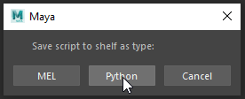
Tool configuration
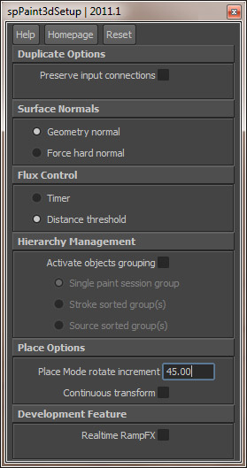
Options are accessed from the Options button from the main UI window.
For now, there is very little options, but hopefully this window will grow with time. Also, for now, it is not necessary to run the setup, the script will assume default behavior if options are not set.
- It is possible to configure the script to duplicate new objects with or without preserving the input connections of the original source object.
Note: This option is only useful when the script is set to duplicate mode in the main script interface window.
- Surface Normals option configure the way the script will orient the created object onto the target surface. Depending on the neighboring edges soft/hard mode the actual normal at the intersection point may not be the normal of the actual triangle. The Force hard normal option forces the script to disregard the edges and compute a straight up normal of the triangle at the intersection point. This mode is particularly useful while placing decal or dirt objects on surfaces.
- Flux control option will let the user decide which method is best suited to control the frequency of the creation of new objects. More often than not, this option will remain set on Distance.
- Hierarchy Management offers 3 different ways for the script to sort the objects it creates.
- Single paint session group: all the created objects will all be sorted into the same group while the script is running.
- Stroke group: each paint stroke will create its group containing all the objects created during that stroke.
- Source group: created objects will be sorted with their source name.
- Place mode rotate increment configures the amount of degrees applied to the rotation of the object while using the Place mode and pressing shift.
- Continuous transform force the object to be transformed again with random values each time the mouse is moved while using the Place mode. If not activated, random values will be fetched only after each object creation.
- Realtime rampFX is a development feature that may be dangerous to use, especially on slow computers. It forces the script to recompute all the transforms for all the objects created within the same stroke event. Only works for Paint mode.
Brush Geometry - Source Objects
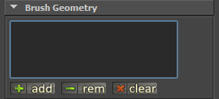
This is where the script will look at for duplicating geometry on the paint surfaces (ie: the brush geometry).
The script only let polygon objects and locators be added to the list. The source objects can be anywhere in the DAG hierarchy as long as this hierarchy is kept relatively simple. Also, they can be anywhere in the world. Make sure to add all the objects you need in this list before starting painting.
The script is not very permitting at this time regarding weird DAG hierarchies and won't allow objects with ambiguous DAG path to be added to this list.
Note: If source objects are buried in a hierarchy, any parent node with non-frozen transform will most probably cause the generated objects to be misplaced. This is a known issues.
Transform Setup
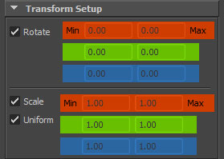
This is where the user can setup the various random factors the script will use for each instance it will create.
-
At any moment (even while painting), the user can decide to (de)activate the transform, thus preventing the various variables to affect the generated objects transformation.
-
The rotation is represented on a standard degree notation. Most of the time the user will probably want to use the rotation along the Z axis while using the align to surface mode for example.
-
The scale is based on the Maya notation (1 being the scale of the object before the script randomized the new value).
Note: If the original object already has been scaled and its transform not frozen, the original scale value will be multiplied with the random value, so the instanced geometry won't reset back to the object original matrix.
The uniform scale option should be self-explanatory (when this option is On, settings from X will be used for Y and Z).
Distribution Objects
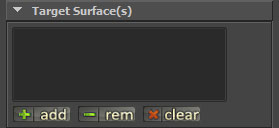
This is the list of the objects the script will paint onto (ie: the landscape). The script only allow for polygon objects to be inserted in this list.
Paint
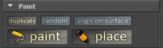
- The duplicate/instance switch will control the behavior of the script when creating new objects.
- The random/sequential switch allows the script either to pick a random object from the Source Objects list each time the script will generate a new object or through a looped sequence of the list.
- The 'align on surface' option will let the script orient the newly generated object along the surface of the distribution object at the point of intersection. This is probably an option that will remain activated most of the time.
Note: Depending on the normal option mode (see setup options), the orientation on the surface may vary depending on neighboring hard/smooth edges.
- The Paint and Place buttons will start the command and set the maya tool to the new mouse context that will allow the user to paint on the viewport. Just like any other 'tool' in the maya terminology, it is possible to quit the tool by pressing 'q' or to select another tool (like move, rotate or scale for example).
- Both options are similar, however while using the Place button, the user will be able to place one and only one object per click. Also, while using the place mode, ctrl will shuffle through the various brush objects from the list and shift will rotate the current object along the up vector from the intersection on the surface.
Note: Regarding Place mode and the control and shift key detection: While it was sort of working prior to 2011, Autodesk moved the whole interface to Qt for 2011 and things have been broken. At the time of the release of this version, there is no detection of events happening when the mouse is not moving anymore whereas it was working previously.
Paint Options
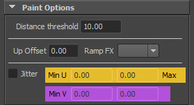
This is where lies some late options for generating the new objects.
- Flux control options can be either set on Distance or Timer in the setup options.
- The distance threshold represent the minimum distance from the previous generated object before another one is allowed to be created. The distance value is using the scene units.
- The timer mode uses a sensitivity slider to allow the user to regulate the flux at which the script generates new objects. The closer the slider value to zero the less 'downtime' there will be between the creation of two new objects. Although the slider goes from 0 to 0.2, the slider value can be manually set up to 1. Useful only for Paint mode.
- Up Offset allows the user to specify the distance the created object will be moved from the surface. Works for both Paint and Place mode.
- Ramp FX is an option to use the transform values as transform boundaries for the created objects within the same stroke. The created objects will be transformed as a ramp between the min and max values chosen in the script UI.
Note: With the current version, when using rampFX with rotate values, objects won't be aligned to the surface normal anymore even if the "align to surface" option is active.
- RampFX only works for the Paint mode at the moment.
- Jitter allows for the created objects to be randomly scattered on the tangent grid at the intersection point. If the values are too big, the objects may either be floating or going through the intersected surface as the jitter won't recompute intersections to follow different surface normals.